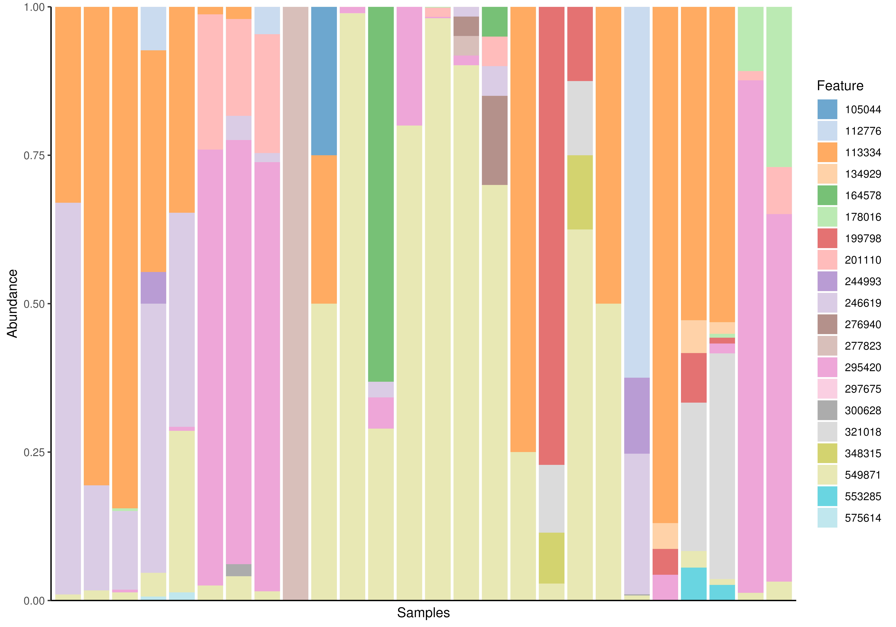

Plotting abundance data
plotAbundance.RdplotAbundance plots the abundance on a selected taxonomic rank.
Since this probably makes sense only for relative abundance data, the
assay used by default is expected to be in the slot ‘relabundance’.
plotAbundance(x, ...) # S4 method for SummarizedExperiment plotAbundance( x, rank = taxonomyRanks(x)[1], features = NULL, order_rank_by = c("name", "abund", "revabund"), order_sample_by = NULL, decreasing = TRUE, use_relative = TRUE, layout = c("bar", "point"), one_facet = TRUE, ncol = 2, scales = "fixed", abund_values = "counts", ... )
Arguments
| x | a
|
|---|---|
| ... | additional parameters for plotting |
| rank | a single |
| features | data |
| order_rank_by | How to order abundance value: By name (“name”), by abundance (“abund”) or by reverse abundance (“revabund”). |
| order_sample_by | A single character value from the chosen rank of abundance
data data or from |
| decreasing | TRUE or FALSE: If the |
| use_relative |
|
| layout | Either “bar” or “point”. |
| one_facet | Should the plot be returned in on facet or split into
different facet, one facet per different value detect in |
| ncol, scales | if |
| abund_values | a |
Value
a ggplot object or list of
ggplot objects, if features are added to
the plot.
Details
Subsetting to rows of interested and ordering of those is expected to be done
outside of this functions, e.g. x[1:2,]. This will plot data of all
features present.
Examples
# plotAbundance(se, abund_values="counts", rank = "Phylum", add_legend = FALSE)# If rank is set to NULL plotAbundance behaves like plotExpression plotAbundance(se, abund_values="counts", rank = NULL, features = head(rownames(se)))# Factors can also be plotted and ordered by plotAbundance(se, abund_values="counts", rank = "Phylum", features = "SampleType", order_sample_by = "SampleType")#> $abundance#>